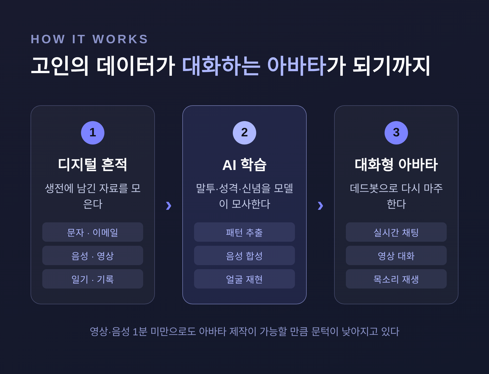

[철학·인문] 디지털 추모와 AI 부활, 죽은 이를 되살리는 기술은 윤리적인가
세상을 떠난 사람을 챗봇으로 되살리는 기술이 이미 우리 곁에 와 있습니다.
이 글에서는 그리프테크와 AI 부활을 둘러싼 윤리 쟁점을 정리해 보겠습니다.
한쪽 결론을 미리 정해 두지 않고, 위로가 되는 면과 우려되는 면을 함께 짚겠습니다.

그리프테크란 무엇인가
먼저 용어부터 정리하겠습니다.
고인이 남긴 문자, 이메일, 음성, 영상, 일기 같은 디지털 흔적을 학습시켜 그 사람의 말투와 성격을 모사하는 AI를 데드봇(deadbot) 또는 그리프봇(griefbot)이라 부릅니다.
이 산업 전체를 가리키는 표현도 여럿입니다.
'디지털 사후세계 산업', '그리프테크(Grief Tech)'가 대표적입니다.
비판하는 쪽에서는 '죽음 자본주의(death capitalism)'라는 말을 쓰기도 합니다.
기술의 목표는 분명합니다.
고인의 외모, 목소리, 신념, 성격을 재현한 '초현실적 디지털 아바타'를 만드는 것입니다.
실제로 누가, 어떻게 만들고 있나
가장 널리 알려진 사례는 프로젝트 디셈버(Project December)입니다.
2021년, 캐나다의 작가 조슈아 바르보는 8년 전 23세로 세상을 떠난 여자친구 제시카 페레이라의 메시지를 입력해 그녀를 모사하는 봇과 대화했습니다.
그는 이렇게 말했습니다.
"지적으로는 진짜 제시카가 아니라는 걸 알지만, 감정은 지적인 것이 아니다."
방식은 서비스마다 다릅니다.
생전에 본인이 직접 인터뷰를 녹음해 두는 곳도 있습니다(HereAfter AI, Eternos AI).
사망 직후 인터뷰 영상으로 학습하는 곳도 있습니다(StoryFile).
범용 AI 동반자였던 Replika를 사별한 이들이 개인 그리프봇으로 변용하기도 합니다.
기술의 문턱은 빠르게 낮아지고 있습니다.
중국 Silicon Intelligence의 기본형 서비스는 생전 고화질 영상·음성이 1분 미만만 있어도 아바타를 만든다고 합니다.

애도에 도움이 된다는 시선
위로가 된다는 근거도 있습니다.
애도 연구에는 '지속적 유대(continuing bonds)'라는 틀이 있습니다.
상실 이후 고인과의 끈을 끊는 것이 아니라 갱신하는 것이 건강한 애도에 도움이 된다는 관점입니다.
이 시각에서 보면, AI 아바타는 치료를 보조하고 안내된 성찰을 도울 수 있습니다.
사라질 수 있는 목소리와 표정을 보존해, 가족의 이야기를 남기는 디지털 아카이브가 되기도 합니다.
캘리포니아의 할머니 로나 앨런은 생전에 HereAfter로 자신의 디지털 유산을 만들어 두었습니다.
덕분에 가족은 사후에도 그녀의 목소리로 이야기를 계속 들을 수 있었습니다.
누군가에게는, 힘든 시기에 이 시뮬레이션이 분명한 위안이 됩니다.
그러나 우려되는 지점
같은 기술이 회복을 방해할 수도 있습니다.
지속적 유대는 상실을 '이해'할 수 있을 때만 도움이 됩니다.
모사된 존재는 오히려 고인이 떠났다는 사실을 받아들이기 어렵게 만들 수 있습니다.
일부 연구자는 그리프봇이 사람을 장기 비애에 가둘 위험을 지적합니다.
공중보건 윤리학자 에마뉘엘 마르소는 전문가 감독 없이 이런 아바타를 쓰면 1년 이상 지속되는 비애의 위험이 커진다고 경고했습니다.
근거의 문제도 남습니다.
그리프봇이 실제로 애도에 도움이 된다는 임상적 근거는 아직 부족하다는 비판이 있습니다.
그래서 일부 학자는 데스봇을 "영구적 해결책이 아닌 임시적 도구"로 규정합니다.
여기서 과학의 냉정한 답도 기억할 필요가 있습니다.
시스템이 보존하는 것은 인격이 아니라 패턴입니다.
응답이 고인과 구별되지 않아 보여도, 그것이 그 사람의 본질을 담은 것은 아니라는 입장입니다.
동의와 존엄, 그리고 법의 공백
가장 무거운 물음은 고인의 자리에 관한 것입니다.
사람은 대개 자신의 데이터가 사후에 어떻게 쓰일지 동의할 기회를 갖지 못합니다.
설령 생전에 동의했더라도, 그 동의가 미래의 오용까지 포괄할 수는 없습니다.
충분히 알지 못한 채 한 동의를 과연 '충분히 안 동의'라 부를 수 있겠습니까.
법의 공백도 큽니다.
대부분의 나라에 사후 데이터 소유권을 다루는 틀이 아직 없습니다.
목소리·필체·용모는 상업적으로 쓰이지 않는 한 지적재산으로 인정되지 않아, AI 응용이 번성하는 '법적 진공'이 생깁니다.
그래서 새로운 권리를 만들자는 제안이 나옵니다.
'데이터 존엄', '목소리 주권', '사후 동의' 같은 개념입니다.
통제·책임·존중·형평을 뜻하는 CARE 원칙도 윤리 지침으로 거론됩니다.
상업화가 부르는 그림자
이 산업은 영리 기업의 영역입니다.
대부분 구독제나 분당 과금으로 수익을 냅니다.
문제는 결제가 끊기면 고인의 아바타에 접근하지 못할 수 있다는 점입니다.
케임브리지 연구진의 경고는 더 멀리 나아갑니다.
기업이 데드봇으로 고인 행세를 하며 은밀히 상품을 광고하거나, "엄마가 아직 너와 함께 있다"고 우기며 아이를 괴롭히는 시나리오가 가능하다는 것입니다.
동의 없는 '부활'은 유족에게 상처가 되기도 합니다.
중국에서는 가수 차오런량의 옛 영상으로 만든 콘텐츠를 두고, 부모가 가족 동의 없이 만들어졌다며 고통을 호소했습니다.
규모도 작지 않습니다.
중국 '디지털 휴먼' 시장은 2022년 약 120억 위안 규모였고, 2025년까지 네 배 성장이 전망됐습니다.
기술이 아니라 죽음의 의미를 묻는 일
결국 이 논쟁의 중심에는 기술이 아니라 실존의 물음이 있습니다.
예전에는 고인을 추억하는 일이 사진과 회상의 몫이었습니다.
지금은 그 회상이 '지속적 시뮬레이션'으로 바뀔 수 있습니다.
데드봇은 위로와 연속성을 주는 한편, 기억의 본질 자체를 바꿔 놓기도 합니다.
다른 윤리 틀도 참고할 만합니다.
"나는 우리가 있기에 존재한다"는 아프리카의 우분투(Ubuntu) 철학은, 죽은 이와의 소통을 개인의 위로가 아니라 공동체와 관계망 안에서 보라고 권합니다.
인격을 클라우드에 업로드한다는 '디지털 불멸' 논의는 더 근본적인 질문을 남깁니다.
보존된 것이 정말 '나'인가.
죽음의 유한함은 삶의 의미에 어떤 자리를 차지하는가.
끝으로 한 마디만 더 드리겠습니다.
이 기술은 누군가에게 위로이고, 누군가에게는 작별을 미루는 덫입니다.
어느 한쪽으로 단정하기에는 아직 우리가 아는 것이 많지 않습니다.
다만 한 가지는 분명해 보입니다.
"되살릴 수 있는가"보다 먼저 물어야 할 것은, "되살리는 일이 떠난 이와 남은 이 모두에게 정중한가"입니다.
기술이 답을 주기 전에, 그 물음 앞에서 잠시 멈춰 서 보시길 권합니다.